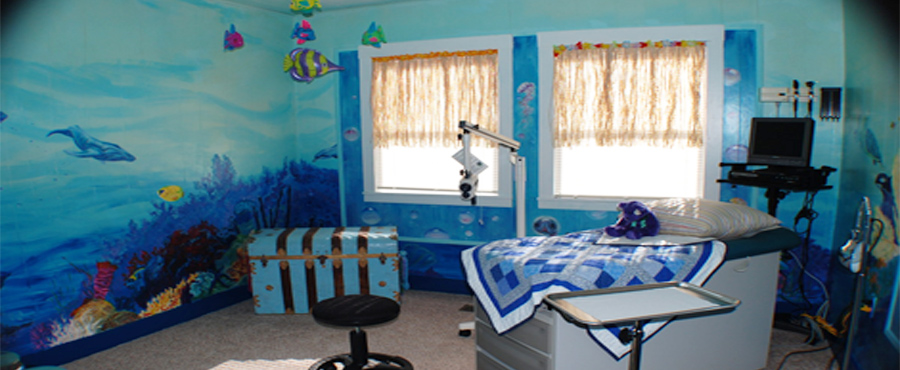
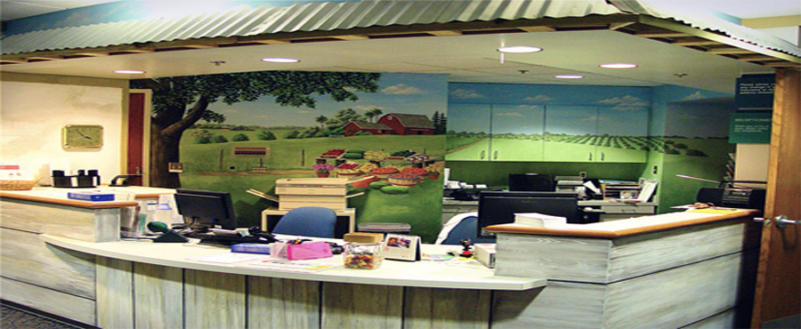
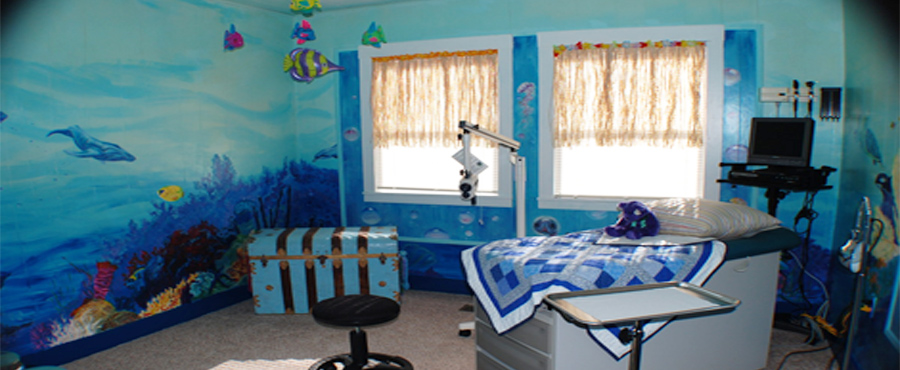
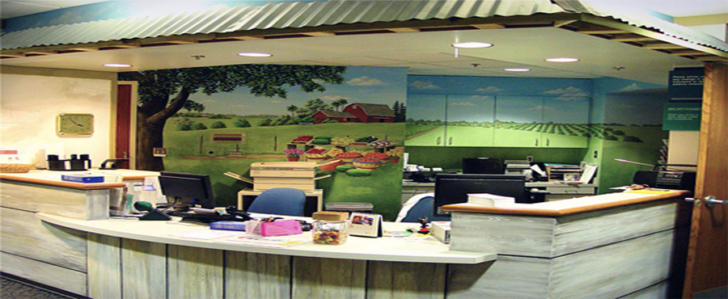

WELCOME!
The physicians and staff of ISTA Pediatrics believe that your child is a precious gift. We count it a privilege to partner with parents as they endeavor to raise healthy, happy children. We have purposed to create a warm, friendly and caring environment for your child. We are committed to providing excellent medical care in a considerate, compassionate way. As physicians, we are here to provide guidance and advice on what you can expect through the various stages of your child's growth. During your visits, we will discuss your child's physical and emotional development; and as we work together you will find that your opinions and observations are a vital part of how we approach your child's medical care. Together we can make the best decisions regarding your child's health.